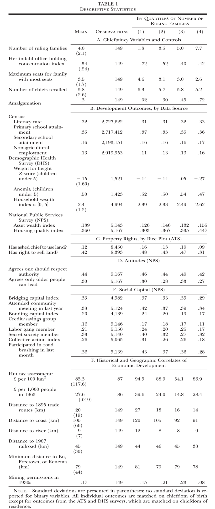
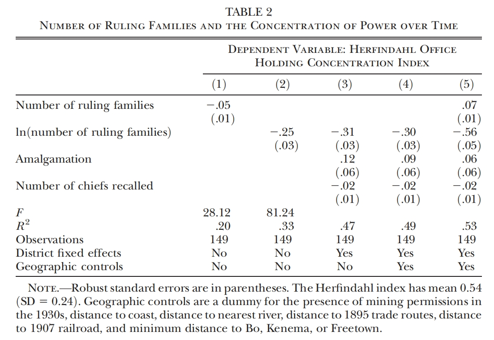
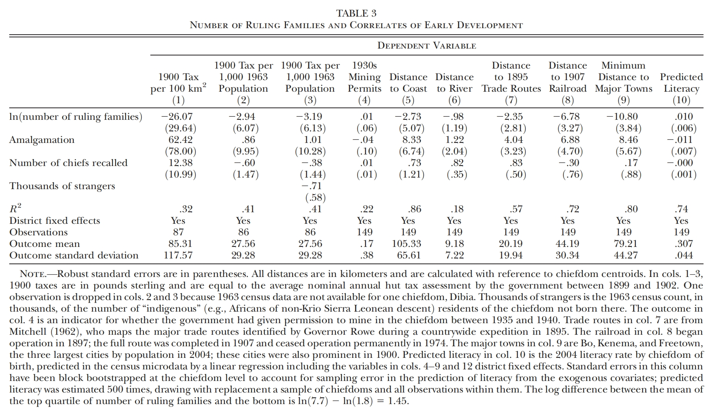
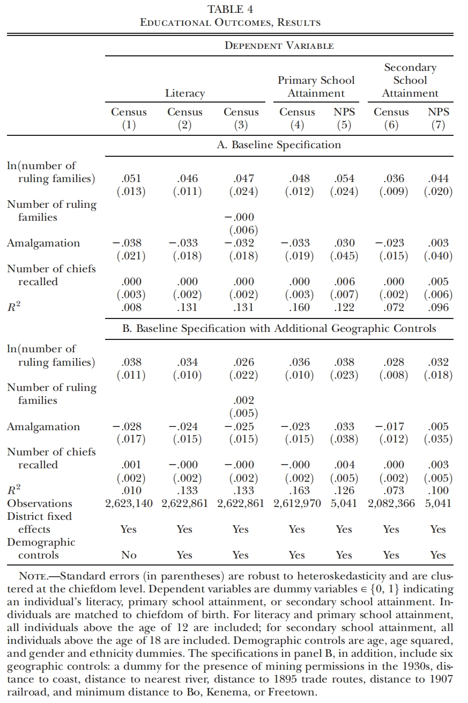
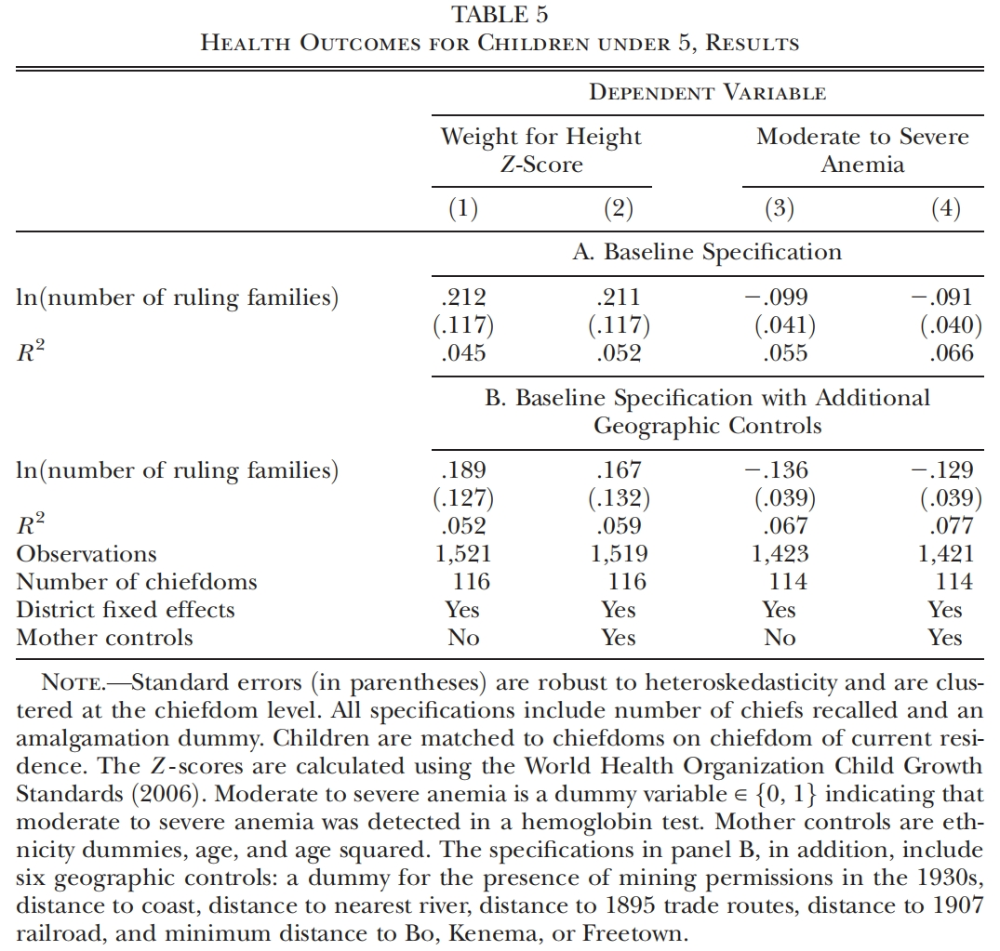
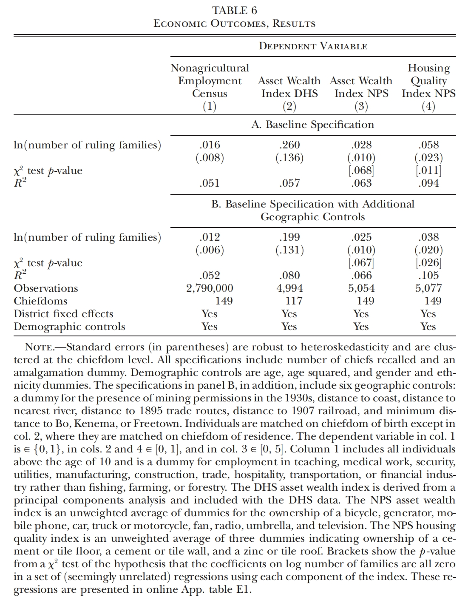
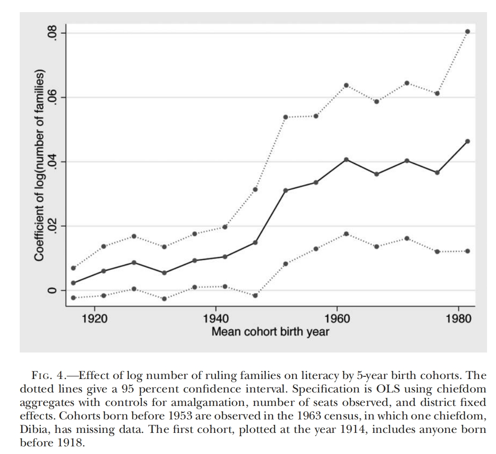
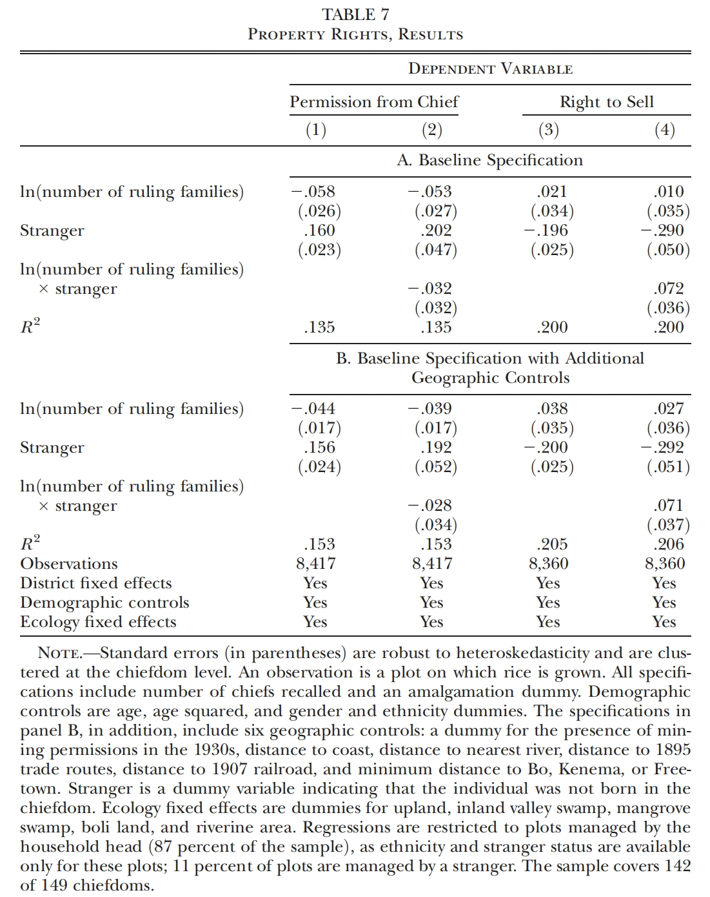
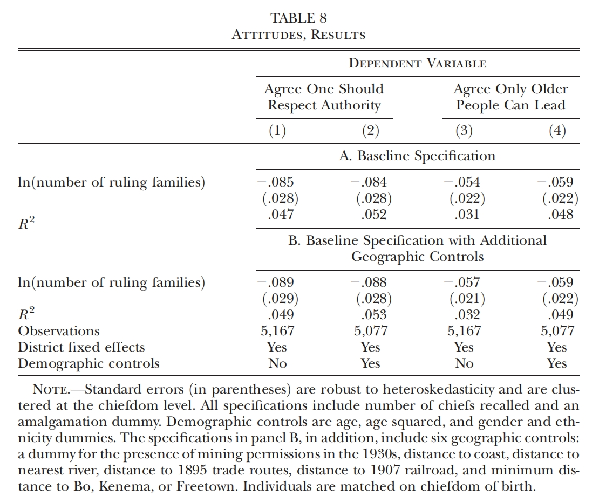
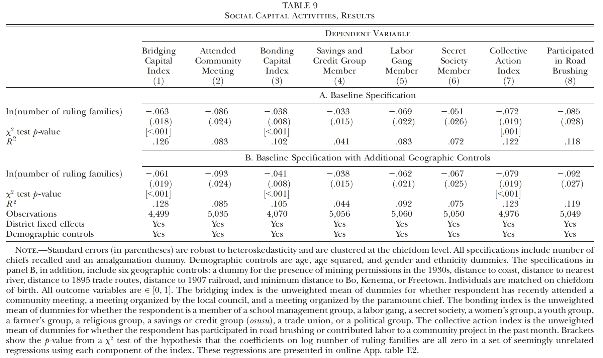

酋长：塞拉利昂的经济增长及公民社会中的精英控制
2021-08-11
Paper: Acemoglu, Daron, Tristan Reed, and James A. Robinson, "Chiefs: Economic Development and Elite Control of Civil Society in Sierra Leone," Journal of Political Economy, 122 (2014), 319–368.
I had the honor of presenting this paper at the China's Economic Transition Workshop on April 20, 2021.
This article can also be found here: https://mp.weixin.qq.com/s/62M0AIt8wv8P_P9B8ZYopg
一、导论：经济增长的制度原因
Acemoglu在经济增长的制度原因方面做出了卓越的贡献。他认为，一个国家的经济和政治制度可以分为两种：包容性的制度和攫取式的制度。他的许多研究表明，一个国家之所以会失败，是因为其经济和政治制度不具备足够的包容性，无法包容社会中更高比例人口的经济和政治利益；相反，一个具有包容性制度的国家，其产权制度更加完善、行政性垄断更少、公共品(如教育、医疗)的供给更加充分等，因此有利于其发展。然而，一个国家建立起的制度是包容性的还是攫取式的，很多时候取决于一些偶然的因素：两个地区一开始的制度差异很小，但是由于某些关键的历史转折点，导致两者的制度漂移路径逐渐产生分野，最终建立起不同的制度。根据关键历史转折点与初始制度微小差异交互作用带来制度漂移的概念，Acemoglu解释了亚非拉不同地区殖民地的财富逆转、大西洋贸易后英国的崛起与西葡的衰落等(Acemoglu, 2012)。本文是作者这一思想在塞拉利昂地区的应用。
塞拉利昂位于西非大西洋岸，曾是英国的殖民地。1896年，英国政府在塞拉利昂实施《保护地条例(The Protectorate Ordinance)》(下称《条例》)，建立起5个保护区。出于降低殖民成本的考虑，英国人担任保护区区长，但在每个区内保留原来当地的酋长制度。塞拉利昂有149个酋长领地，每个领地内的酋长(paramount chief)是地方的最高权威，然而只有英国政府指定的统治家族(ruling family)成员才有资格竞选酋长。《条例》破坏了对酋长权力的诸多限制，作者发现，在《条例》实施之后，拥有不同统治家族数量的领地在经济发展、产权制度、社会资本等方面取得的成果逐渐发生分野。这是因为，统治家族数量越多，政治竞争就更加激烈，对于酋长的限制就越大；《条例》的颁布作为一个关键历史转折点，放松了对酋长权力的限制，使得那些统治家族数量少的酋长领地中更容易出现攫取式的行为，而统治家族数量多的领地的制度包容性更强，进而影响了不同地区的发展结果。
作者使用的实证方法很简单，利用领地内的统治家族数量作为该地区政治竞争强度的代理变量，考察其与各种经济、社会发展指标之间的相关关系。但是，从相关关系到因果关系的过渡需要说明以下三个问题：首先，如果酋长受到的约束比较小，是否就会采取一些攫取式的行为；其次，领地内的统治家族数量越多，政治竞争是不是就会更加激烈，从而约束酋长行为；最后，统治家族数量是不是一个足够外生的变量。因此，在正式回归前，作者的论述主要围绕这三个问题展开。
二、塞拉利昂的酋长制度
在这一章中，作者对塞拉利昂的酋长制度进行了较为全面的介绍，并利用一些事实对上文提及的三个问题进行了初步的回应。
(一)拥有较大政治权利的酋长会做什么？
实际上，许多非洲国家在沦为殖民地之前就已经产生了酋长制度。在保留当地酋长制度的基础上，殖民统治者建立起了间接统治体系。有研究指出，如果缺乏问责制，间接统治下很难建立起使政治精英对公民负责的体制(Lugard, 1922)。实际上，殖民政府对原来的酋长制度的制度化通常会使得酋长变得更加不负责任(Abrham, 2003; Goody, 1979)，塞拉利昂就是这样。比如说，在以前，如果酋长和他的人民发生了争执，人们有权利向临近领地的酋长上诉；但在新的统治体系下，酋长成了地方民事法律纠纷中的最高权威，类似的上诉行为变得不那么有效了(Abrham, 2003)。根据一个档案的记录，1966年，某酋长领地的议员向政府提出正式申诉，指控酋长强行占领土地并强迫居民提供无偿劳动；然而，申诉行为很快就被镇压下去，上诉者被迫签署道歉信。
间接统治下，酋长们获得了更多寻租和扭曲当地经济活动的机会。其中一个例子是1927年的《省土地法(Provinces Land Act)》。这项法规禁止非本地人进行土地交易，强行将非本地人的土地所有权转交给酋长；同时，法规给予酋长在制定当地土地税和贸易税方面非常大的自主权，这就使得酋长可以制定复杂的税收结构为自己谋取更多利益。另一个例子与酋长对税收的使用有关，根据Lord Hailey对1948年塞拉利昂财政支出的核算，在所有的地方财政收入中，58%用于行政管理，这导致公共服务的质量非常糟糕。并且，由于酋长们主持着当地的民事司法体系，因此出现了许多酋长代表其家庭成员介入纠纷的案例(Maru, 2006)，从而严重扭曲了司法。这些事实都表明，在《条例》给予了酋长更大的统治权力后，攫取式的行为变得更加严重与普遍。
(二)统治家族从何而来？统治家族数量是外生的吗？
一个酋长领地的统治家族是最初由英国殖民政府指定的，最初指定的统治家族数量与当时各地的情况以及一些历史因素有关，而这些情况并不与当地的发展状况相关。比如说，Gola族人曾经从利比亚移民到塞拉利昂凯内马东部的Koya领地，这批人形成了后来的两个统治家族：Komai家族和Sellu家族。而位于科伊纳杜古的Kassunko领地，在十五世纪被Limba的战士征服，占领当地的Limba人形成了后来的五个统治家族。
事实上，在最初的指定过后，不同地区的统治家族还发生了许多具有异质性的变化。比如，如前面所说，Koya领地最初统治家族只有两个；后来，直到时任酋长的Komai家族的Kormeh离世后，Komai家族依然没能生出男孩继承统治家族的血统，最终，曾与政治有染的Kanneh家族掌握了政权，于是Kanneh家族也就成为了第三个统治家族。这种由于家族中没有明确的继承者继任而导致新的统治家族出现的现象是很常见的。
同样位于凯内马的Simbaru领地和Koya领地有着类似的种族构成，但是因为当初定居于此的Gombulo一行人一直有男性继任者，因此Simbaru领地一直只有一个统治家族。
婚姻也可以导致一些新的统治家族的出现。比如说，如果一个统治家族中的儿子年龄还不够大，不足以继任，那么女儿嫁给的丈夫是可以参与选举的，丈夫的家族也就慢慢演变为统治家族。博城区的Bagbo领地中统治家族之一Coker家族就是这么来的。
19世纪80年代时，Kassunko领地面临着Sofa地区的入侵者。如果被成功入侵，那么当地的统治家族可能面临着重新洗牌的危险。幸运的是，由于当时的酋长Sara Baio身体上有畸形，入侵者认为不能与他们战斗，导致入侵最终没有发生(Lipschutz, 1973)。
这些历史资料在传达一个重要的信息：某个领地中统治家族的数量往往是一些偶然因素决定的，与当地的发展水平并不相关。而在1920年之后，统治家族数量就保持不变了，这也意味着《条例》颁布之后，统治家族数量没有因为当地的发展情况而发生变化。作者希望通过这些证据表明，统治家族数量是一个足够外生的变量。
(三)统治家族数量越多，政治竞争是否越激烈？
在间接统治下，统治家族是参与政治竞争的单位。Burrows(1976)发现，竞争的激烈程度随着统治家族数量的增加而增加：在凯内马地区的16个酋长领地中，Simbaru是唯一的只有一个统治家族的酋长领地，那里具有广泛的共识和很少的公开冲突；在Dodo领地、Nomo领地(两者都有两个统治家族)，家族的竞争是比较轻的；但是在Nongwa领地(四个)、Gaura领地(五个)、Tunkia领地(三个)和Lower Bambara领地(两个)，激烈的冲突经常发生。
统治家族对于政治权利的竞争是为了寻租。比如在那些钻石勘探活动活跃的地区，谁能进入最高产矿区是由酋长决定的，这就产生了寻租的空间(Murphy, 1990)。但是，如果酋长滥用权力，其他家族就能够形成有力的理由，尝试在未来的选举中取而代之。2009年，在Lower Bambara领地，就发生了因为酋长在司法纠纷中给予自己家族的人特权而被赶下台的情况。同年，在Sogbini领地，统治了百年的Bio家族被Bayo家族取代，支持率发生变化的原因就在于酋长的严重失职——他喝酒的时间比治理的时间还长。
这些事实提示我们，统治家族数量往往决定了当地的政治竞争强弱。如果统治家族多，酋长受到的约束就会更强，滥用权利的行为就更容易被制止，因此攫取式的制度就不容易长期存在。
三、数据
在这一部分，本推文将简单介绍作者的数据来源。实际上，作者的另一巨大贡献在于构建起了塞拉利昂酋长制度的首个全面的历史记录。为了获得149个酋长领地的历史，作者的团队对149个酋长领地进行了走访，对当地的“口述历史学家”进行了充分的访谈，从而获得了有关各个酋长领地统治家族数量、历届酋长名单、是否经历过合并等信息。基于访谈的结果，作者撰写了另一篇文章，更加详细地讲述了塞拉利昂地酋长制度，读者可以参考Reed和Robinson(2013)。关于调查中可能产生的偏误，作者在原文与附录中有详细的说明和检验，本推文暂且忽略。除此之外，作者在文中还使用塞拉利昂当地的人口普查、人口与健康调查(DHS)、全国公共服务调查(NPS)和农业住户跟踪调查(ATS)等数据。下表展示了数据的描述性统计。

四、统治家族数量是权力集中度的良好代理变量
从这一部分开始，作者将用一些实证证据对前面提出的问题进行回应。这一章中，作者主要回答其中一个问题，即统治家族数量是不是权力集中度(竞争程度强弱)的良好代理变量？
为了反映权利集中度，作者构建了HH指数： $$H_c=\sum_{f\in F^c}\left(\frac{s_f^c}{N^c}\right)^2$$ 其中，$F^c$是领地c中统治家族的集合，$f$代表不同的统治家族，$N^c$是记录中领地c的酋长的届数，$s_f^c$则代表家族f的成员在$N^c$届酋长中当选酋长的次数。
通过考察统治家族数量与HH指数之间的相关关系，可以判断能否用统治家族数量作为权力集中度的代理。于是，作者构建了如下的回归方程： $$H_c=\delta_d+\alpha_{fam}\cdot F_c+\gamma_c\cdot N_c+\gamma_a\cdot Amalgamation_c+\varepsilon_c$$ 其中，用$F_c$代表酋长领地c中统治家族的数量。$\delta_d$代表12个区的固定效应，$N_c$是记录中领地$c$的酋长的届数，$Amalgamation_c$是一个虚拟变量，如果取1代表该领地是由曾经多个领地合并而来的，否则取0。最后$\varepsilon_c$代表了误差项。
TABLE 2展示了估计的结果，无论统治家族数量是否采用对数形式，其与HH指数均具有显著的负相关关系，这表明统治家族数量是竞争强弱的良好代理变量。

五、统治家族数量是足够外生的变量
尽管作者在前文中已经通过一些历史事实说明了统治家族数量是由一些偶然因素决定的，这一部分中作者依然要更加系统地进行说明。为此，作者寻找了反映《条例》颁布时各领地发展程度与发展潜力的变量，分析其与统治家族数量之间的相关关系。具体的回归方程如下： $$y_c=\delta_d+\alpha_{farm}\cdot F_c+\gamma_n\cdot N_c+\gamma_a\cdot Amalgamation_c+\varepsilon_c$$ 其中，$y_c$是与领地发展程度或发展潜力相关的变量，其余变量的含义与之前一致。TABLE 3展示了回归的结果。

在第(1)列至第(3)列中，作者研究了殖民政府在1898年至1902年每年估计的房产税均值，这个变量反映了二十世纪之交各领地的经济繁荣程度。其中，第(1)列和第(2)列分别按照酋长领地面积和1963年的本地人口进行了归一化处理。第(3)列中，作者加入了非本地人的数量，用来控制更繁荣的酋长领地导致的移民对估计造成的影响。虽然小样本导致了较大的标准误，但是这三列的估计系数都非常小，远远没有达到显著的标准，未能提供表明统治家族数量与先前发展成果相关的证据。此外，由于估计系数是负的，这说明即使有相关性的，更多的统治家族反而对应着更低的人均税收估计。
前文已经说明，1920年以来，各领地统治家族数量已经保持不变了。在第(4)列中，被解释变量指示了在1930年代第一次采矿业繁荣的期间，领地是否获得政府授予的采矿许可。回归结果表明，统治家族数量与采矿许可之间应该不存在相关性。
在第(5)(6)(7)(8)(9)列中，作者检验了统治家族数量与一些可能影响领地发展潜力的地理历史特征之间的关系。(5)(6)(7)列中的被解释变量分别是到海岸、到通航河流以及到1895贸易路线的距离。在这三列中，统治家族的数量在统计学意义和经济学意义上均不显著。
第(8)列中的被解释变量是到1907铁路的距离，在殖民时期这条铁路对于农业出口非常重要。估计结果是显著为负的，系数为-6.78，但这个结果的量级似乎在经济学意义上是不显著的。在第(9)列中，作者使用到达塞拉利昂三个主要城镇(弗里敦、凯内马和博城)的最小距离，估计得到的系数显著为负，但依然在量级上非常小。
总的来说，这一部分的结果表明，统治家族数量和殖民地繁荣程度的代理变量之间不存在相关关系，但是统治家族数量可能与某些决定经济发展的地理因素是相关的，不过这种影响非常小。对于后者，作者在原文中有更加详细的说明和论述。
六、统治家族数量对各项经济、社会发展成果的影响
在前文中，作者利用历史事实与实证证据说明了决定某个领地中统治家族数量的是一些偶然的因素，在那些统治家族数量多的地区，权力集中度低，政治竞争更加激烈，从而酋长对权力的滥用更加容易受到限制。然而，这种差别一开始并没有导致不同地区的发展绩效存在显著的差异。1986年《条例》颁布，英国殖民者逐渐在塞拉利昂建立起了间接统治体系，这一体系破除了之前对酋长权力的部分限制，导致政治竞争程度不同的地区的发展绩效出现分野。在这一部分，作者将展示多方面的事实，作者设定的回归方程如下： $$y_{ic}=\delta_d+\alpha_{fam}\cdot F_c+\gamma_n\cdot N_c+\gamma_a\cdot Amalgamation_c+X_{ic}^{\prime}\cdot\beta_X+W_c^{\prime}\cdot\beta_W+\varepsilon_{ic}$$ 其中，$i$代表个体，$c$代表酋长领地，$y_{ic}$是我们关注的被解释变量，在部分模型中被解释变量是虚拟变量，因此需要转化为线性概率模型。向量$X_{ic}$在一些模型中会出现，其中包含了个体层面的社会统计学协变量：年龄、年龄的平方以及性别和种族的虚拟变量。$W_c$是前文提到的六个可能与经济发展潜在相关的地理特征变量，对于后文的每一个模型，作者将在Panel A中展示不包括向量$W_c$的结果，再在Panel B中加入这个向量。实际上，在后文的分析中，是否加入向量$W_c$对结论几乎是没有影响的，因此本推文对后文Panel B中的内容不再赘述。其余变量的含义与前文一致。作者重点关注的是$\alpha_{fam}$，它代表了不同统治家族数量的酋长领地之间的差异。
(一)对发展成果的影响
作者首先分析了对教育成果的影响。TABLE 4使用了2004年人口普查数据和2007年的全国公共服务调查(NPS)的数据。被解释变量分别为是否识字、是否具有小学学历、是否具有中学学历。从回归结果上看，每一列的α_fam都是显著为正的，表明随着统治家族数量的增加，领地取得的教育成果更加优秀，系数大小在经济学意义上也是显著的。

其次，作者分析了对儿童健康情况的影响，TABLE 5展示了这一结果。这里的数据来源于2008年的人口与健康调查(DHS)，被解释变量分别为5岁以下儿童的身高-体重z评分(代表与标准值的差距，塞拉利昂儿童的平均水平明显低于标准值)和贫血情况。结果表明，统治家族数量少的领地，儿童的身高-体重z评分更低，贫血问题更加严重。从统治家族数量最少的那25%的领地(平均1.8个统治家族)到最多的那25%的领地(平均7.7个统治家族)，孩子的身高-体重z评分提高了0.31，罹患重度或中度贫血的可能性降低了13个百分点。

最后，作者分析了对经济成果的影响。TABLE 6中分别以从事非农工作的人口比例、DHS调查中提供的财富指数、作者根据NPS数据构造的资产财富指数和住房质量指数作为被解释变量(具体构造方式请读者参考原文)。作者发现，回归结果均具有统计学意义上和经济学意义上的显著性。

(二)识字率随时间的变化
这一部分是上一部分的进一步分析。作者利用1963年和2004年的人口普查数据，将出生于1914年之后的人口按照每5年进行分组，进行分组回归，考察不同组内识字率与统治家族数量的关系，从而表现出不同领地之间差异的动态变化。
下图展示了分组回归的结果，实线代表不同组$\alpha_{fam}$的点估计值，虚线是95%置信区间。可以发现，在统治家族数量不同的酋长领地之间，出生于1950年之前的人口的识字率并没有明显的差异，这一点与历史事实是相符的。尽管教育当局建立于1896年、第一所学校建立于1906年，但是直到20世纪50年代和60年代早期，酋长才开始主导立法会的任命，而立法会负责教育开支的分配(Cartwright, 1970)。因此，不同领地的分歧从这段时间开始，是合情合理的。

(三)产权
作者随后考察了不同领地产权保护之间的差异。TABLE 7中第(1)列和第(2)列分析了农户使用土地是否需要征得酋长的同意，可以发现这两列的估计系数显著为负，表明统治家族之间的竞争会减少酋长对于土地使用的影响。第(3)列和第(4)列分析了农户是否由出售土地的权利，虽然估计系数为正，但是并不显著。作者在回归模型中加入了变量$Strange$，代表个体是否是非本地人，第(4)列中，统治家族数量与非本地人虚拟变量的交互项系数显著为正。这表明，统治家族竞争主要影响了非本地人的土地产权，这与1927年《省土地法》赋予酋长权利去管理非本地人的土地是息息相关的。

(四)社会态度、社会资本和集体行动
最后，作者考察了不同领地在社会态度、社会资本和集体行动之间的差异。作者利用NPS数据构建了两个与社会态度相关的变量，展示在TABLE 8中，第一个代表代表人们是否认为应当更加尊重国家权威，第二个代表人们对于酋长和精英的质疑(在塞拉利昂，往往年长者才能进入统治阶级，因此对年长者的质疑就是对统治阶级的质疑)。从结果上看，那些统治家族数量更少的领地对于权威的尊重程度更高。这个结果是有些令人惊讶的，因为如果统治家族数量越少，酋长的攫取性行为应当更多，人们对统治阶级应当是更加不满的。

随后，作者利用NPS数据考察了不同领地社会资本和集体行动的差异。作者依据Putnam(2000)，将社会资本分为“桥梁(bridging)”社会资本和“联系(bonding)”社会资本，前者是公民与社会精英之间的联系，后者是人们与自己具有相似社会地位的人之间的联系。除此之外，作者考察了人们参与集体行动的情况，并构建了集体行动指数。TABLE 9展示了这部分的结果，可以发现，统治家族数量少的领地，人们之间的关系更加密切、集体行动更加活跃。
事实上，上述得到的结果与现有讨论社会资本的文献是相悖的，这些研究通常认为，统治精英的专制与低社会资本、低公民参与是互为因果的。但是，基于非洲和塞拉利昂的体制结构，作者认为本文的结论是可信的。这是因为，社会资本既可以代表公民的联系与参与的程度，也可以是维系社会控制的工具。Murphy(1990)和Ferme(2001)的研究对这一观点提供了明确的支持。Murphy强调，在塞拉利昂，社区会议作为一种社会控制的形式，被精英们用来构建一种社区的治理是基于社区共识的表面现象，而事实上，他们的决策和会议上的共识没有很大关系。对此，Murphy写道，“话语权的民主形式通常被视为为了掩盖暗箱操作的假象……一个成熟的人或团队的关键属性是有能力去策略性地构建……民主的表面现象。”Ribot阐述了一个类似的解释，即统治者通过这种表面上的民主维系政权的合法性。从这个角度出发，就能够理解为何那些酋长权利更大的领地拥有更多的社会资本，以及人们对权威的尊重更加强烈。
作者还对上述结果进行了一些稳健性的检验与分析，读者可以阅读原文与附录，本推文不再涉及。

七、总结与启示
Acemoglu等人的这一研究所使用的方法很简单，逻辑也非常清晰。作者通过历史事实和一些实证证据对统治家族数量这一变量的合理性与外生性进行了论证，从而将统治家族数量与发展绩效之间的相关关系提升为因果关系。作者发现，一个领地的统治家族数量是由一些偶然因素决定的，与当地的发展绩效等并不相关。尽管不同领地中政治竞争的程度不尽相同，但是一开始并没有导致领地出现明显的差别。在英国建立起正式的间接统治体系之后，酋长的权利被进一步解放，获得了更多进行政治寻租的机会。那些统治家族数量较少、政治竞争不那么激烈的领地中，酋长的攫取式行为可能更加严重，从而导致了在发展绩效、产权保护等方面的落后。然而，这些领地却拥有较高的社会资本和对统治权威的尊重，作者认为这是因为精英阶层通过营造民主的假象来控制了整个公民社会，人民被锁定在了对精英的依赖当中。
本文是Acemoglu制度决定论和制度漂移思想又一现实应用，得到的大多结果并不出人意料，表明了限制统治者政治权利、建立包容性更强的政治和经济制度对于发展的正面效应。除此之外，作者发现塞拉利昂(作者认为对非洲其他国家可能也适用)的公民社会可能已经被精英所控制，这启示我们，一些国际援助机构尝试强化落后国家的公民社会、提高社会资本的举措，可能会起到相反的作用。